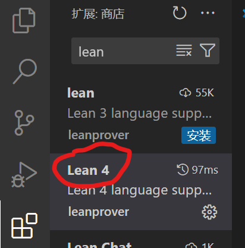
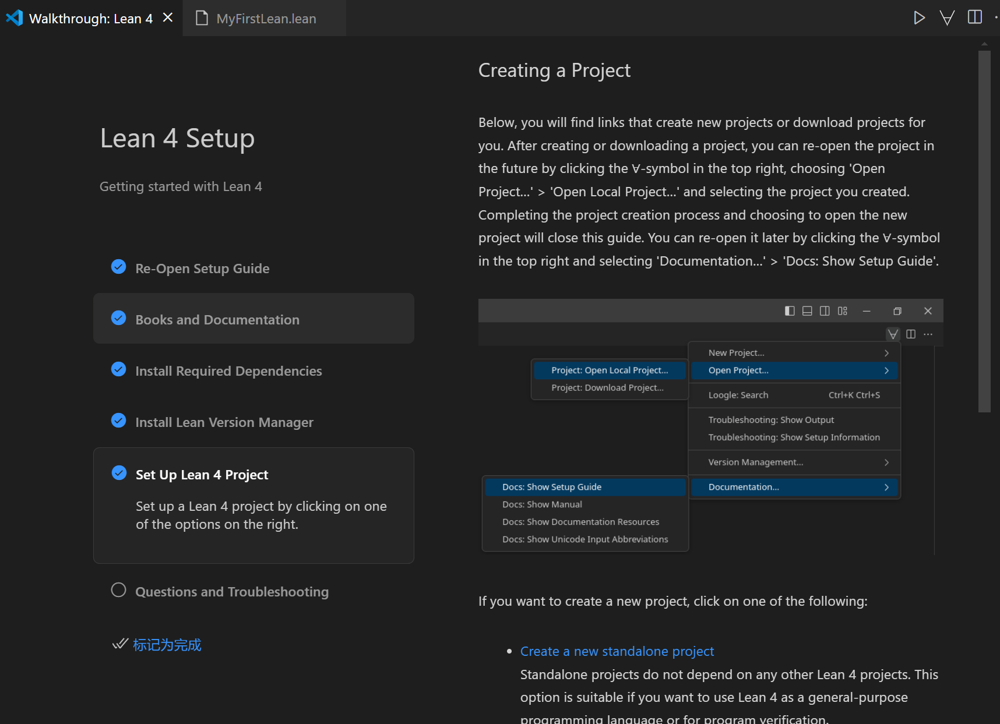
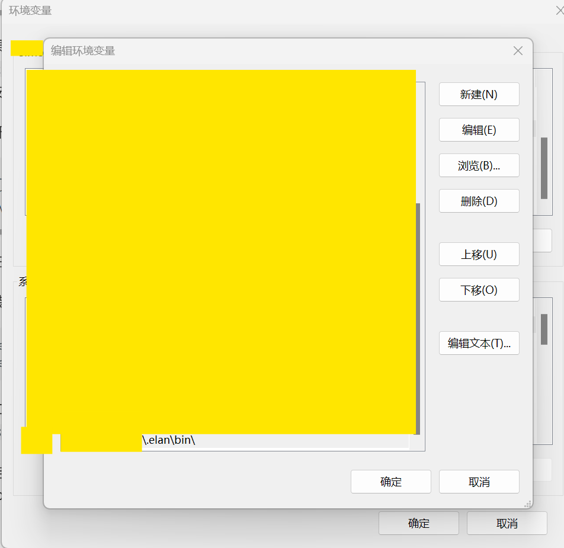
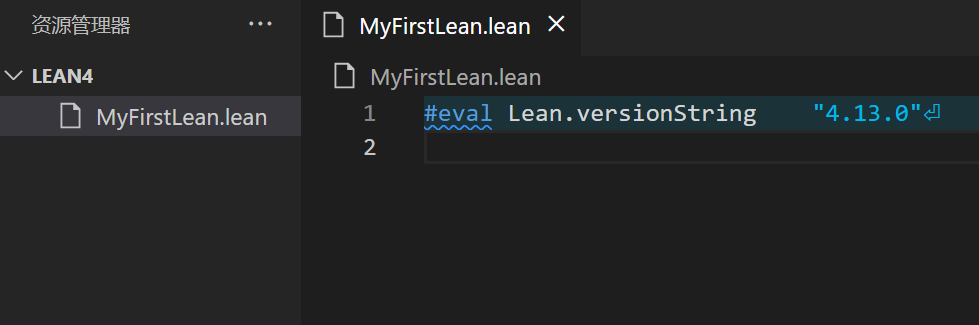
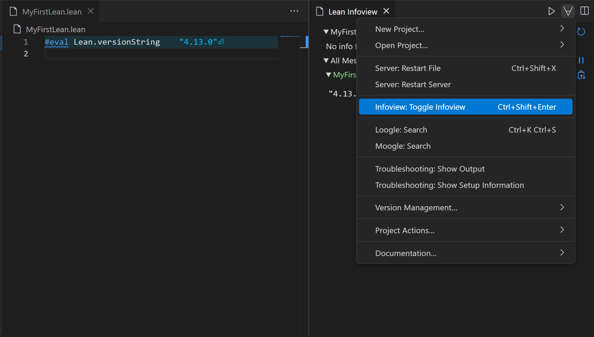
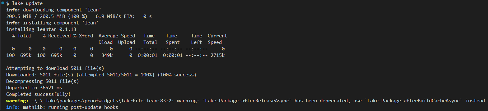
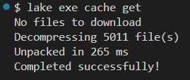
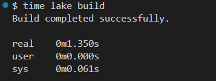

VSCode 中安装 Lean 4
VSCode中安装扩展：

跟随右侧导航走即可：

记得给elan 设置一下环境变量：

这个文件夹下（C:\User\<User Name>\.elan\bin\）
编写一个测试文件：

点击右侧 符号，选择Toggle Infoview 可以看到一些预览信息（或快捷键Ctrl+Shift+Enter：

Lean 4 项目的创建
我们使用 lake 进行项目的创建
注（引用自：Lean4 - Mathlib4 / 用于形式化数学的准备 (1) - 知乎，Lean4 安装教程 - Lean Prover 中文文档）：
然后可以使用以下命令进行项目
lake new basic这样就建立了一个名为 basic 的项目，它的结构是这样的：
basic
├─ Basic
│ └─ Basic.lean
├─ Basic.lean
├─ lake-manifest.json
├─ lakefile.toml
├─ lean-toolchain
├─ Main.lean
└─ README.md或者你也可以选择在某个文件夹下直接运行 lake init 进行初始化。
接下来就可以使用 lake 来将 Lean 4 程序转换为可执行程序了：
lake build你观察项目文件目录结构会发现恰好多了一个 ./lake 文件夹。接下来就是运行：
lake exec hello总结 lake 常见用法如下所示：
# 构建新项目
lake new <project_name>
# 在当前文件夹初始化新项目
lake init
# 构建项目可执行文件
lake build
# 运行
lake exec <project_name>
# 清理构建文件
lake clean
# 更新依赖
lake update
# 运行 lakefile.lean 的脚本
lake run <script>包的引用
注意到初始化好的项目中有一个文件 leanfile.toml ，这是一个配置文件，我们可以在其中进行引用的管理，格式如下：
# A Reservoir dependency
[[require]]
name = "<pkg-name>"
scope = "<scope>"
version = "<version>"
options = {<options>}
# A path dependency
[[require]]
name = "<pkg-name>"
path = "<path>"
# A Git dependency
[[require]]
name = "<pkg-name>"
git = "<url>"
rev = "<rev>"
subDir = "<subDir>"其中比如我们想要引用 Mathlib，那么就可以如下编辑 leanfile.toml 文件：
name = "basic"
version = "0.1.0"
defaultTargets = ["basic"]
[[lean_lib]]
name = "Basic"
[[lean_exe]]
name = "basic"
root = "Main"
[[require]]
name = "mathlib"
git = "https://github.com/leanprover-community/mathlib4.git"
rev = "v4.11.0"lean-toolchain 内容可以改为：leanprover/lean4:v4.11.0
这时运行 lake update ，额，它就会疯狂安装包。

下面这个命令可以下载预编译的文件：

这样build就很快：
